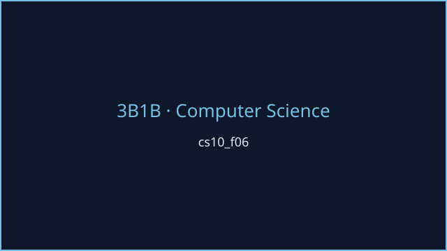

প্যারিটি হিসাব আসলে XOR-এর খেলা। একাধিক বিটের XOR তখনই ১ হয় যখন ১-এর সংখ্যা বিজোড় হয়। তাই প্যারিটি বিটগুলোকে কয়েকটি XOR হিসেবে লেখা যায়।
কোড তৈরি ও যাচাই—দুটোই এখন কেবল XOR-এর মাধ্যমে করা যায়। কম্পিউটারের জন্য এটি অত্যন্ত সস্তা ও দ্রুত।
তিনটি প্যারিটি সমীকরণকে একটিমাত্র ম্যাট্রিক্স $H$ দিয়ে লেখা যায়। সঠিক কোডওয়ার্ড $c$-র ক্ষেত্রে $Hc^{T}=0$ হয়—এটি হলো কোডের ''পরীক্ষা''।
$H$-এর কলামগুলোকে ১ থেকে ৭ পর্যন্ত বাইনারি সংখ্যা হিসেবে সাজালে ম্যাজিক ঘটে।
প্রাপ্ত শব্দ $r=c+e$ হলে $Hr^{T}=He^{T}$—অর্থাৎ সিনড্রোম নির্ভর করে শুধু ভুলের ওপর। ত্রুটি যদি $i$-তম বিটে হয়, সিনড্রোম হয় $H$-এর $i$-তম কলাম, যা ঠিক $i$-র বাইনারি রূপ।
একই কৌশল যেকোনো $r$-এর জন্য কাজ করে—$2^r-1$ বিটের ব্লকে $r$টি প্যারিটি যোগ করে মাত্র একটি বিটের ভুল সংশোধন করা যায়। $r=3$ দিলে আমাদের পরিচিত (7,4) কোড পাই।
বিটের সংখ্যা বাড়লে ''ওভারহেড'' ($r/n$) কমে যায়—ফলে দীর্ঘ বার্তায় এই কোড আরও দক্ষ হয়।
ভুলের অবস্থান আর তার বাইনারি কোড—এই দুটিকে একই করে দেওয়াই হ্যামিং কোডের শ্রেষ্ঠত্ব। কোনো জটিল অনুসন্ধান নেই; একটি ম্যাট্রিক্স গুণেই উত্তর চলে আসে।
সঠিক কাঠামো বাছাই করলে জটিল সমস্যাও সরল গণিতে রূপ নেয়।
নিচের ইন্টারেক্টিভ উপাদান ও কুইজের মাধ্যমে পাঠের ধারণা নিজে যাচাই করুন।
